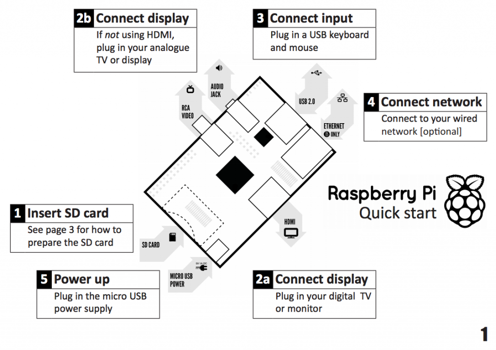
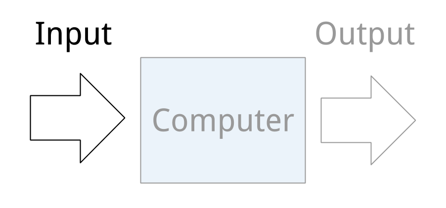
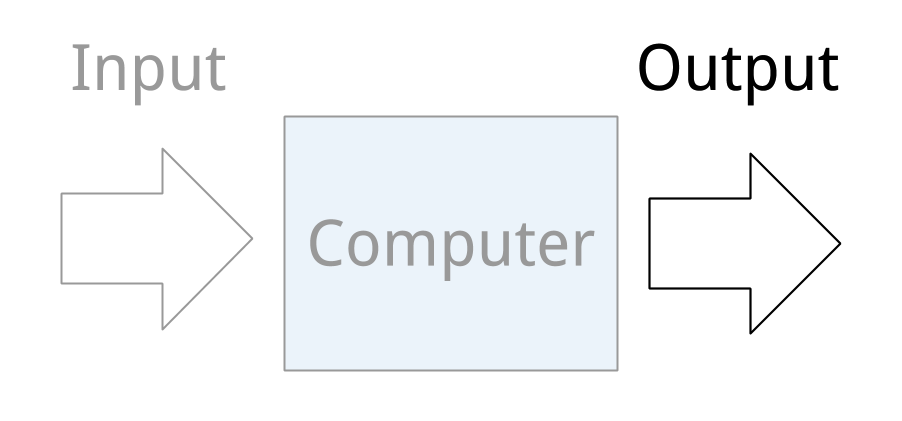

Teen Tech Camp 2013
Python and Pi
Hosted by Durham County Library
Refresh The Triangle
Good Morning!
Introductions
Game plan
Get to it
Good Morning!
Introductions
Game plan
Get to it
Your Instructors
You
- What do you want to learn to do?
- What School?
- Favorite computer game?
Good Morning!
Introductions
Game plan
Get to it
Game plan
- Introduction to Programming
- Programming
- Lunch & Technology Showcase
- Programming
- Raspberry Pi Tour
- Wrap-Up (3pm)
- Open Lab and Hacking (until 5pm)
Good Morning!
Introductions
Game plan
Get to it
Raspberry Pi

Raspberry Pi : Logging In
username: pi
password: raspberry
startx
Tour of the Raspberry Pi
Raspberry Pi
http://raspberrypi.org/quick-start-guide
My Pi
Snack Time!
Algorithm
A set of rules or instructions to be followed in order to solve a problem
Let's Code
- Terminal
- ipython notebook
IPython Notebook
Lesson 1: Math
| + | Addition |
| - | Subtraction |
| * | Multiplication |
| / | Division |
Lesson 1: Variables
A variable is a way to store a value. In Python you assign a value a name or a label that can be referenced later.
Lesson 2: Input & Output
Input/output (I/O) is the communication between a computer and the outside world
Input is information received by the computer
Examples of Input Channels
- Keyboard
- Mouse
- Game Controller (XBox)
- Voice (Siri)
- Camera/Motion (Kinect)
Output is information produced by and sent from a computer
Examples of Output Channels
- Text/Console (Printing to a screen)
- Video Display (Game Display)
- Updating a Game (Making a move)
- Voice (Siri)
- Sound/Music
- Controlling Motors (Robots)
Lesson 2: Input & Output
ipython notebook : Lesson 2
Hello World
IDLEX
lesson2/hello_world.py
Number Guessing Game
IDLEX
lesson2/number_guess.py
Lesson 3: Logic & Control Structures
Lesson 3: Logic & Control Structures
IPython Notebook : Lesson 3
Comparison Tests
Logic: If-Elif-Else
if your homework is done, watch TV
else do your homework
While Loop
while test_is_true:
do stuff
For Loop
A way to do something to every item or for every item in a list
for every item in item_list:
do stuff
I Want a PB&J Sandwich
Functions
Captures a series of instructions in a simple to reference way.
make_sandwich()
IPython Notebook: Lesson 4